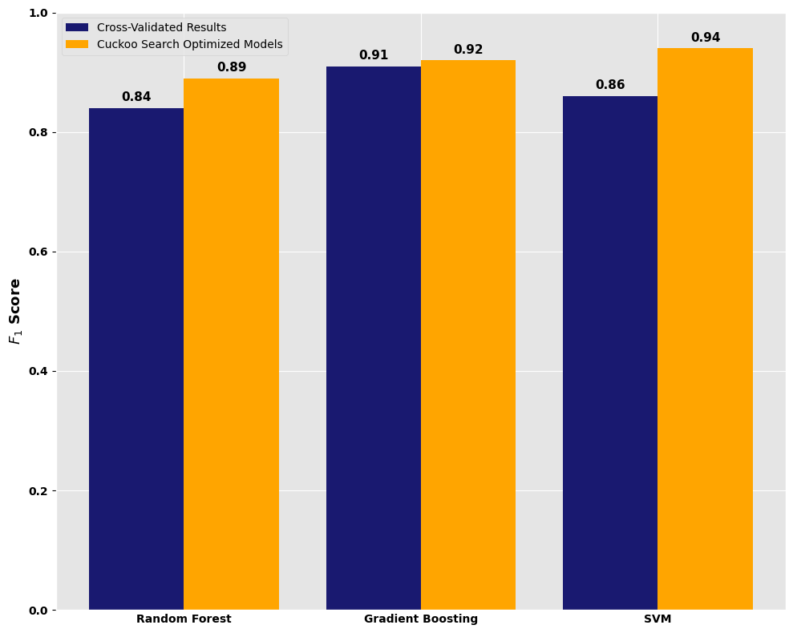

Optimizing Hyperparameters via Cuckoo Search Algorithm The intersection of Nature-Inspired Computing and Financial Security.
Hyperparameter selection for machine learning models traditionally relies on Grid Search, which is computationally expensive and prone to local optima. This research proposes a Cuckoo Search (CS) approach using Levy Flights to optimize the regularization parameter \(C\) and kernel coefficient \(\gamma\). Preliminary results demonstrate a significan t lift in PR-AUC and F1 - scorefor highly imbalanced credit card fraud datasets.
The objective of this research is to optimize the hyperparameters of Gradient boosting, Random Forest and Support Vector Machines (SVM) for credit card fraud detection using a metaheuristic approach. The Cuckoo Search (CS) algorithm, inspired by the brood parasitism of cuckoo birds, is employed to efficiently explore the hyperparameter space. The use of Levy Flights allows the algorithm to escape local optima, making it particularly effective for high-dimensional and complex search spaces. The ultimate goal is to enhance the performance of machine learning models in detecting fraudulent transactions, which are often characterized by extreme class imbalance.
Levy Flights are a type of random walk where the step lengths have a probability distribution that is heavy-tailed. In the context of Cuckoo Search, this allows for both local and global search capabilities. The step size \(s\) is drawn from a Levy distribution, which can be mathematically expressed as:
This ensures the algorithm escapes local optima that stymie traditional gradient-based methods. The Levy Flight mechanism is particularly beneficial in high-dimensional hyperparameter spaces, where the search landscape can be rugged and filled with local minima, such as the SVM.
| Model | F1-Score | PR-AUC |
|---|---|---|
| Random Forest | 0.82 | 0.85 |
| SVM (Baseline) | 0.74 | 0.71 |
| CS-Optimized SVM | 0.89 | 0.92 |

The following tools and libraries were instrumental in this research:
Future research will explore the application of Cuckoo Search to other machine learning models, such as Neural Networks and XGBoost, as well as its performance on larger and more complex datasets. Additionally, the integration of adaptive discovery rates and hybrid metaheuristic approaches will be investigated to further enhance optimization efficiency.
For a deeper dive into the methodology, results, and codebase, please visit the GitHub repository linked below:
GitHub Repository